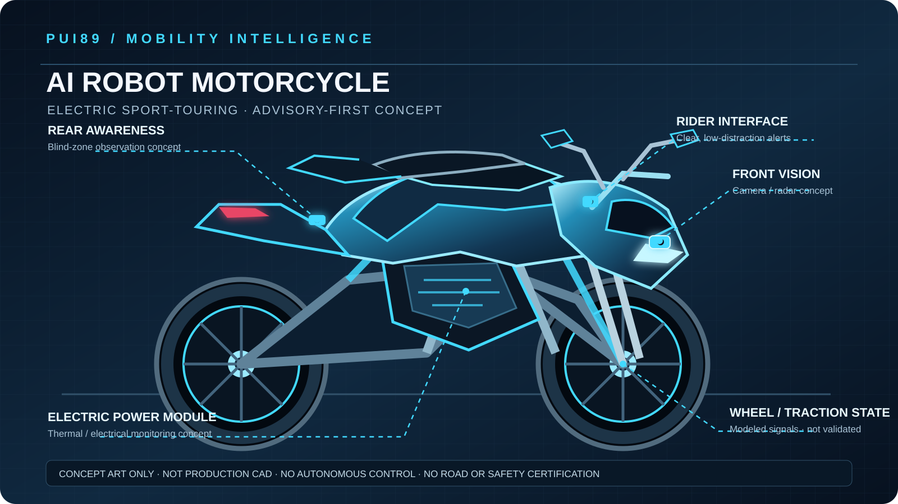

Mission & research scope
Develop an evidence-led software foundation that interprets documented observations, tracks uncertainty and data freshness, assesses modeled hazards, and presents clear recommendations for a human rider.
A safety-first research concept for rider awareness, road-surface and traction-risk analysis, modeled vehicle-health monitoring, and explainable advisory support. The rider remains in control at all times.
Open GitHub repository ↗ Design documentation ↗
Develop an evidence-led software foundation that interprets documented observations, tracks uncertainty and data freshness, assesses modeled hazards, and presents clear recommendations for a human rider.
Synthetic Observation → WorldState → Rider / Traction Risk Analysis → Safety Gate → Human-facing Advisory → Evidence Record
Designed to reuse the shared PUI89 AI Core contracts rather than create a duplicate core.
Initial software and engineering foundation. The repository includes documented scope and hazards, synthetic rider-risk and traction scenarios, a deterministic baseline, and software-only regression tests. These do not establish real-world motorcycle safety or performance.
Early-stage · simulation-first
github.com/Pui89/ai-robot-motorcycle
View project plan ↗